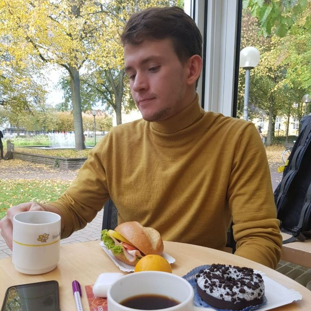

About Me
I'm a Game Designer with focus on level and technical design. I love to create games that motivate intrinsic playfulness and bring adventures to the players.
Currently, I am a Master's student at the Faculty of Cognitive Science at the University of Osnabruck. And I think I am an excellent candidate for this opening. Having such a background in Computational Linguistics and AI-Driven Software Development should make me a unique and strong candidate.
In the past few years, I was involved in several DevOps and Unity3D projects, inspiring me to advance in this amazing field. My resume also highlights my career profile and most significant accomplishments that are also in alignment with your position. As a young scientist and explorer, I find your organization very extraordinary, and I would like to put my ambition and passion into this job. I am inventive and focused on the future.